Reducing research debt
A few ideas on the use of web technology to present distilled research (and become a better teacher in mathematicsThis article is written from the perspective of a mathematician, but it should be easily translated into physics, computer science and related fields.)
The impossible climb
The last true polymath is said to have been Gottfried Wilhelm Leibniz, with countless contributions to logic, philosophy, mathematics, engineering, psychology, physics, law and various other fields.
Few of us can say to have a similarly broad expertise; even more: Most researchers would label themselves not as mathematicians but as topologists, probabilists or computational scientists; not as physicists,
but as experimental physicists or string theorists etc. It is believed that this is not due to humanity becoming less intelligent but due to science becoming more and more specialised: If Leibniz's endeavours are likened
to climbing all mountains in the Austrian Alps (which is no mean feat but possible given sufficient fitness and perseverance), a modern scientist aspiring to be a true polymath faces a challenge similar to that of scaling every elevation higher than 500m on Earth as well as on any known celestial object in the solar system.
The large amount of knowledge humanity has accumulated so far has made it virtually impossible to be an expert in more than one discipline.
This also affects students aspiring to become researchers themselves: The long climb to the peak of current research becomes longer and more tedious with every new proven result stacked on top of the mountain
of science. Thought through, this means that -- given nothing changes -- there is a natural limit to research happening at a point where coming to speed with current research takes a whole lifetime.
In this article, we will call a climb which takes longer than a standard lifetime, an impossible climb.
There are two ways out of this dilemma. First, we can narrow down specializations even more
such that there is less relevant material to be learned until novel research can be carried out. But this can only buy so much time and we suspect that there is an upper limit to specialization
that will still attract people to mathematical research. Also, a forest of disconnected ivory towers not being able to communicate with each other generates its own kind of problems: Techniques which are useful for various disciplines need to be developed
independently by each discipline and multidisciplinary projects will become even more rare.
The second idea is to speed up the learning process (in the spirit of Christopher Olah's article this means constructing elevators to skip the climb).
In this essay we want to collect and present a few ideas on how to achieve this goal with the aid of new media, adding a few thoughts of our own.
While a lot of these ideas have been present for some time, with the development of newer and more flexible web technologies, they are now more easily implemented than ten years ago.
We will talk about the following topics. [Update!]
- Polya's four steps as a general guideline for mathematical teaching
- Leslie Lamport's hierarchical proof structure
- Hierarchical and multidimensional narratives
- Visualization and animation
We will then discuss some hurdles to the implementation of these measures and conclude with an incomplete list of "best practices".
Polya's four steps
Cairns, Gown and Collins present Polya's four steps to solving a problem.
Polya's four steps for solving problems
- Understand the problem with examples, diagrams and a careful examination of each of the terms and unknowns in the problem.
- Plan how you intend to solve the problem.
- Execute the planned solution with care.
- Reflect on the result, how it relates to other results and how it might be proved differently.
The authors argue that this method for problem solving can be applied verbatim to learning mathematics; and a teacher of mathematics (or someone writing a textbook or a scientific article) should present her material in a
way such that the reader will (maybe inadvertently) follow these four steps.
Translated into the language of teaching mathematics, these four steps can be reformulated.
Polya's four steps for teaching mathematicsThis is for the example of presenting a theorem and its proof. It has to be rephrased slightly for presenting definitions
- Build intuition about the theorem's implication and the necessity of its prerequisites.
- Sketch the proof, i.e. give an outline of its most core elements.
- Execute the proof in detailSteps 2 and 3 may be realized by the hierarchical structure described below
- Reflect on the theorem's use in subsequent theory or in applications, on its versions in more general settings, or on variants of the proof.
I believe that this four step system as presented in is a helpful guiding concept to keep in mind for the rest of the article.
Reflecting on these principles, I have found that almost all "excellent"by this I mean exceptionally instructive and well-written (in my opinion) textbooks or papers
roughly follow this pattern.
A prime example for this is "An introduction to the Conjugated Gradient Method without the agonizing pain" by Jonathan Shewchuk . This is its abstract:
The Conjugate Gradient Method is the most prominent iterative method for solving sparse systems of linear equations.
Unfortunately, many textbook treatments of the topic are written with neither illustrations nor intuition, and their
victims can be found to this day babbling senselessly in the corners of dusty libraries. For this reason, a deep,
geometric understanding of the method has been reserved for the elite brilliant few who have painstakingly decoded
the mumblings of their forebears. Nevertheless, the Conjugate Gradient Method is a composite of simple, elegant ideas
that almost anyone can understand. Of course, a reader as intelligent as yourself will learn them almost effortlessly.
[...] I have taken pains to make this article easy to read. Sixty-six illustrations are provided. Dense prose is
avoided. Concepts are explained in several different ways. Most equations are coupled with an intuitive interpretation.
We continue with discussing a didactical concept proposed by Leslie Lamport, the developer of LaTeX.
Hierarchical proof structure
In his 2012 paper , Leslie Lamport advocated the introduction of structured proofs in mathematical literature. His basic message was that, while notation
has improved a lot (we now write $x^2 = 4$ instead of "what is the number which has the property of equating 4 when multiplied by itself?"), the mathematical community's way of writing down proofs was basically trapped in the 17th century.
He proposed to use a hierarchical proof structure:
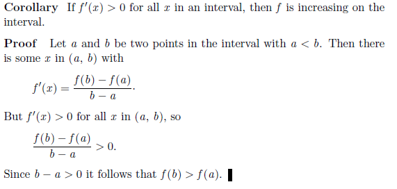
The original proof from Spivak[Cite!]
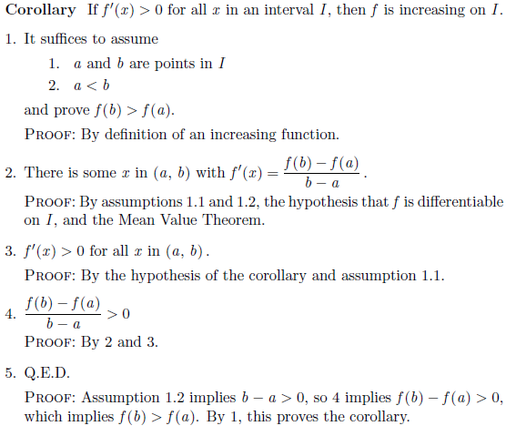
Lamport's proposed proof structure
The expanded version (on the right hand side) clearly marks all the "ins and outs" in every step of the proof. Now some reader may struggle with step 2: The application of the Mean Value Theorem
requires a function to be continous but he only sees a differentiable function. This means we need a sub-proof for the fact every differentiable function is continous. At this point we can either refer to a lemma
which might have proven this fact before or we can follow Lamport's suggestion to insert a sub-proof.
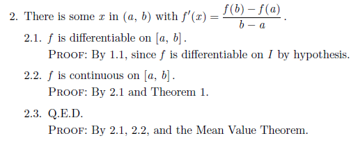
Subproof of step 2, from Lamport [fix scaling!]
A hierarchical proof can be implemented in at least three ways.
- Hierarchical structure by indentation: All substeps are shown always and are structured by various degrees of indentation. This is the only viable method for print but has the draw-back of never hiding
unnecessary information for advanced readers (although it is visually possible to skip steps by skipping indentations). This is the method used by Lamport in although he
states that using hypertext (see next bullet point) is even better.
- Hierarchical structure by hypertext pop-ups: Subproofs can be shown by clicking on a proof step. This is the method demonstrated by Moyen (see fig. ???) and can be used
in pdf files.
- Hierarchical structure by expanding and collapsing text: Clicking on a proof steps pushes down the rest of the text, allocating space for presenting a lower-level subproof.
This is actually the method preferred by both Lamport and Moyen, but can at this point not be realized in pdf files. This is because blank space would need to be allocated in advance,
showing initially a document with huge areas of white space which is only filled if the reader decides to expand the hierarchical structure down to the lowest possible level.
It is possible to realize this in a web-based document, though. This was demonstrated by Cairns, Gow and Collins in
although their interactive topology course sadly no longer exists. To our knowledge this is the only published report of hierarchical structure implemented for a whole set of lecture notes.
It is also a very worthwhile read about mathematical didactic in itself. Given how much web technology has advanced in the last 15 years it makes sense to revisit their ideas
and realize them with modern web tools. We will talk more about their impulses later. Note also Grundy's description
of a software for "proof browsing".
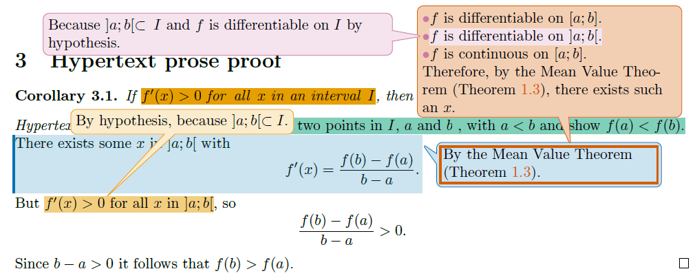
Hierarchical structure by hypertext pop-ups, from Moyen [fix scaling!]
It follows a demonstration of how an interactive hierarchical structure could work on a webpagePlease do not look at the source code of this example.. For example, click on the proof of step 2 to expand and click again on
the expanded proof to collapse.
Corollary: If $f'(x)>0$ for all $x$ in an interval $I$, then $f$ is increasing on $I$.
Proof:
-
-
-
Proof
-
Proof
-
Proof
Gamification
Humans have a deep-rooted passion for playing and exploring, with Friedrich Schiller going as far as to say "Man only plays when in the full meaning of the word he is a man, and he is only completely a man when he plays.".
Many mathematical discoveries (as happened with breakthroughs in physics and engineering) only arose from someone thinking "what happens if I change this bit?". People love to tinker and to fiddle; and to observe the environment's reaction.
Furthermore, fun leads to passion, passion gives persistence and motivation, which in turn is necessary for the hard work needed in order to achieve anything meaningful.
Another facet of the power of playing is that it helps acquiring familiarity and intuition. Why? To understand this we need to think about what playing really is: Children play in order to see how things work. When they
knock over a tower of bricks they do not mean to be destructive, they are trying to understand statics and gravity. No parent would try to teach their toddler Newton's laws of motion, because playing is an incredible
shortcut to a kind of understanding which may not be exact, but approximately correct and intuitiveBy this we mean that a child may not be able to calculate the exact point of impact of a thrown ball, but it will
intuitively predict a roughly correct area in which it will land. . Later, when the child learns about mechanics in school, its experience will help him internalize the analytical method of predicting.
While the importance of playing for children and their development has been widely acknowledged, there seems to be a growing body of literature suggesting that adults can benefit a lot from playing, too.
I am no expert in psychology and so we will not get into that but just state an unproven proposition: Playing helps people to gain informal and intuitive familiarity with some object or
system which can help them when they are thinking about it in an analytical way. This in turn improves intuition. I think about this feedback system in the following way.
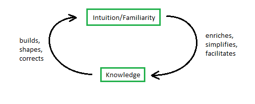
Intuition-Knowledge feedback cycle [fix scaling!]
In some sense it could be argued that "traditional" ways of presenting mathematics work by entering this feedback cycle from below (starting with knowledge), by confronting the reader with
enormous amounts of knowledge (definition, definition, definition, lemma, lemma, definition, theorem,...). Only the fittest survive this and emerge -- with an intuition they formed as a by-productbut
which they may not be able to communicate effectively: They were not introduced into the topic by the use of intuition so the have not learned how to communicate their own intuition. What I want to
propose here is entering the feedback loop from above (i.e. by building some intuition early on). We'll see how this can be done.
Entering the feedback loop from above
Let's talk about the game "A slower speed of light" (By the MIT Game Lab). The game objective is very simple: Pick up 100 orbs by walking around in a slightly Kafkaesque landscape. Every orb you pick up reduces your environment's
speed of light by a small amount (while your own maximum speed is unchanges), until your own speed reaches the speed of light with the 100th orb. By doing that, you can experience step by step relativistic effects: The doppler effect changes the colors of objects,
the searchlight effect brightens objects which lie ahead of you and the whole scenery gets warped by space and time dilation.
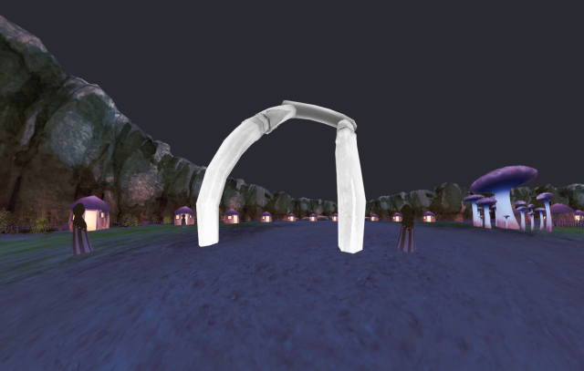
Gameplay from "A slower speed of light" [fix scaling!]
By playing "A slower speed of light" you can get familiarity and almost "real life experience" with something which is classically beyond the reach of our senses. After some time you intuitively know in which direction
the giant mushrooms in the landscape will (seem to) bend when you whizz past them with 90% speed of light. When you later calculate length dilation with pencil and paper there is a good chance you will be able to
match the outcome with your newly acquired relativistic intuition and say "Yep, this sounds about right".
Or take the short browser game "District". It teaches you how how to edit voting districts in order to secure your candidate's victory even if the majority of voters is not voting for him. This teaches
the basics of gerrymandering better (and quicker) than reading an article about it could.
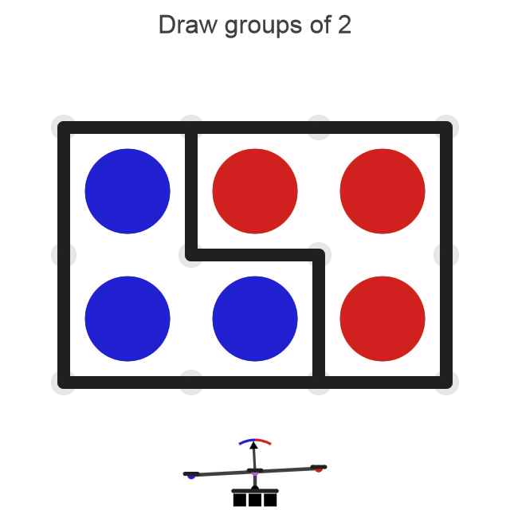
Gameplay from "A slower speed of light" [fix scaling!]
[Concluding paragraph]
Multidimensional and hierarchical narratives
Cairns, Gown and Collins very nicely explain how there are essentially two parameters to tune when writing down math: [visualize with animation?]
- Amount of details in the proof: Lots of details mean that the main idea of the proof might get obscured by technicalities, too few details means the reader cannot properly understand it.
- Amount of contextual informationThis means material outside the classical "lemma, theorem, proof, corollary" structure, i.e. examples, visualizations, explanations, hints at generalizations and applications etc.
. This kind of "bonus material" is essentially irrelevant for the logical argument (and tiresome for an expert in the field just trying to find the main contribution of the text) but is necessary for
a beginner in order to form a better mental representation of the material presented.
Setting those parameters means choosing an audience: There are few textbooks which are read by both undergraduate students and researchers and indeed, as Cairns, Gown and Collins point out: A given mathematical text
may not even be appropriate for a single reader at different times (with the reader progressing in her mathematical abilities, she may want to see less and less technicalities in the proofs and the general exposition in order to more quickly absorb essential information).
Media based on paper necessarily fixes these parameters once and for all. The use of "starring" sections (i.e. marking them as advanced material) or relegating technical proofs in the appendix can alleviate the issue, but permanently
skipping sections makes for a tiresome and disorienting read.
With modern web technologies, we see essentially two possibilities in order to tackle this problem. The first possiblity is to apply the idea of hierarchicalizationas discussed for proof structures above
and make whole sections of contextual information appear and disappear on the reader's whim. This might work nicely but there is another problem with conventional media:
Textbooks and scientific articles are usually written in a linear, contiguous manner. Theorems and their proofs follow lemmata, after that we get examples, concluded by exercises left to the reader. The reader can stray from the path,
jump over sections and ignore proofs which he deems to tedious to follow for the moment, but he is still forced to navigate his way through what is essentially a very long scroll of papyrus. If he needs to re-read a previous
paragraph or find a definition, he needs to scroll back until he finds the passage. It is hard to navigate in one dimension because one has to remember the exact order of the items along it. There is another option, though.
Adding dimensionality
We talked about people loving to play and explore and so it makes sense to
try and introduce "explorative fun" any time when teaching mathematics (be it lecturing undergrads or writing a research paper).
There is a caveat to this: Given too much explorative freedom, anyone will be overwhelmed by the amount of choices You can't just give a high school student a licence of Matlab and tell him to "do numerics" with it.. Also,
a teacher (or the write of a textbook) supposedly has a learning goal for his audience in mind which he tries to lead the student (or reader) towards to.
There is a sweet spot (which may be individually different) between the yoke of a very rigid textbook and unhelpful total freedom. We think that an instructive teaching medium has struck the balance if it
takes the reader by the hand, gently leads him towards helpful ideas, warns him of common misunderstandings but then takes a step back and waits for him to choose the directions in which he wants to proceed:
More rigor, more exercise, more details or more intuition Note that those categories are by no means mutually exclusive in the long term, but for someone starting to learn about a specific field they may be at first..
Instead of just hiding and expanding sections which seem interesting to the reader, it would make for an immersive experience if she could actually "go in different directions", not only figuratively (while still being
constrained to the one-dimensionality of the document), but literally: If a classical document (even with dynamically expanding and collapsing sections) is still a continuous scroll (albeit variable in length), we hereby mean navigating
a tree-like structure, with a stem covering the main story with branches diverting to "building intuition", "generalization to metric spaces", "more examples and counterexamples", "applications to physics" etc.
Most readers will find some of those branches, but not all of them, interesting. By presenting the material in this form, the reader does not need to skip a large number of pages,
losing track of what he read and what he leapt over. As humans usually have a decent way of navigating themselves in two dimensionswe do not use three dimensions like birds do, this seemingly
confusing structure might actually lead to an improved orientational sense inside a documentThe authors have often found themselves in a situation where they were looking for a specific definition, remark or proof
which they had read earlier but couldn't remember where exactly it was located. This is not just unnecessary time loss but also breaks concentration.
. [Definitely need a good sketch of a multidimensional document structure here, even better: A working demonstrator]
A second reason for "writing a tree" (instead of a scroll) is that dependencies often form a tree structure, see fig. ???. Sometimes the reader has a specific goal in mind, i.e. a chapter, algorithm or theorem she wants to
understand. If the document is written tree-like, she can follow the sequence of branches leading to her goal very easily and more intuitively.
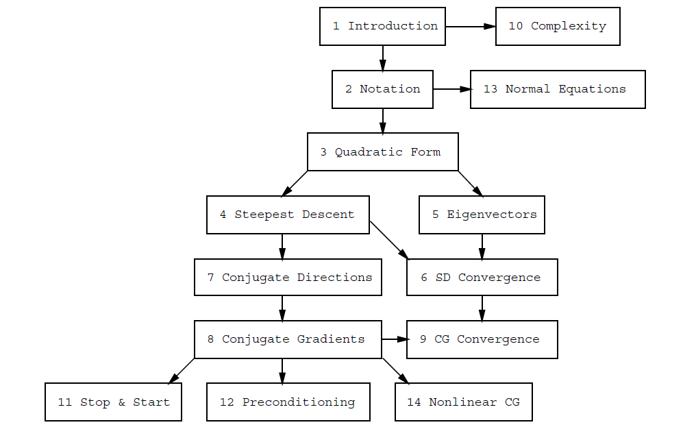
The chapter dependency structure of
We ask the reader to recall how many textbooks he has actually read from cover to cover (we suspect that this constitutes a small fraction of all books he has read). Most readers will want to look for a specific
"substory" of a given textbook (or an article). Let's take a typical linear algebra textbook. Here are a few plausible reader types and their intention for reading the book:
- Undergraduate student taking a linear algebra course: She needs to be able to solve linear equations by next week because exams are approaching fast.
- Graduate student: He is currently struggling with functional analysis, has heard that it actually is just "infinite-dimensional linear algebra" and wants to brush up on some basics that he forgot.
- PhD student working in Computer Vision: She is looking for some techniques for working with rotations, translations and general transformations in 3D in order to accelerate her code.
- An assistant professor lecturing linear algebra for the first time: He is currently skimming multiple resources in order to find a particularly nice proof for the Jordan normal form.
- A tenured professor writing her own book about linear algebra: She remembers that a specific notion was exceptionally well-explained in this book and wants to adopt this concept in her own writing.
All those readers superficially need different textbooks because every one of them needs to ignore large portions of the whole text (which is very tiring). It could even be hypothesised that there is such a
large (and growing) number of books on almost any topic because there are typically a lot of different reader types and few books manage to appeal to all of them, because it is exhausting to read a book like this:
A specific reader might read just small, scattered parts (in red) of a book. [fix scaling!]
A dynamical content textbook where the reader can collapse and expand sections might help bringing those red batches closer together, but a tree-like structure might be more intuitive.
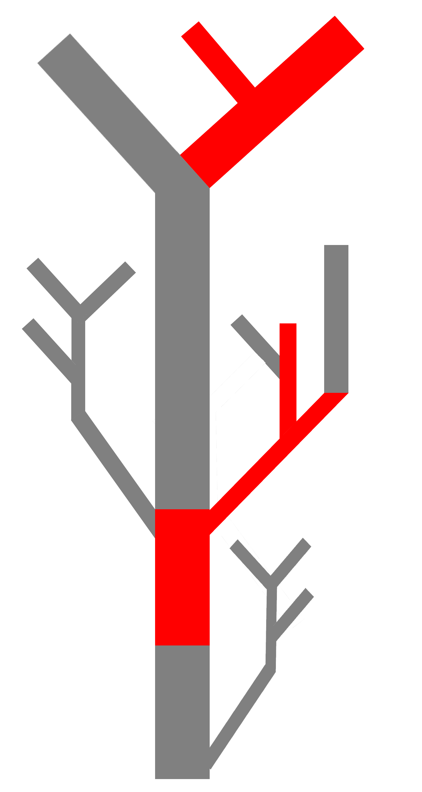
When navigating a "book tree", the reader has a clearer structure of what he is reading and what he is skipping. [fix scaling!]
Visual explanations and animations
Mathematical intuition seems to be a contradiction in terms: Intuition is a quick and dirty answering tool shaped by our everday experience: When we show someone a video of a person throwing a ball and we stop the video a
few seconds into the ball's trajectory, we will get a roughly correct answer for "Where will it land?". We have an intuition for where a ball thrown by hand will land approximately even without making the calculations.
On the other hand, we don't have an intuition for the dynamics of a ball thrown with 90% speed of light because it lies outside of what we see every day [according to whatif, it is not good]. By definition, abstract mathematics
lies outside of our immediate everyday experience. Nevertheless, when mathematicians work, one can often hear things like "Intuitively I think you're right, but how do we prove that? Maybe we should try ..., this feels like a good idea.".
The choice of words here betray that the mathematician actually has some kind of intuition on this topic, not shaped by everyday experience but by hours and hours of study.
Visual explanations
In our mathematical experience, intuition comes with specific mental imagery: The simplex algorithm for linear optimization problems can be posed in the language of linear
inequalities as a sequence of Gaussian elimination steps. It is a lot more revealing, though, to think of the simplex algorithm as jumping from vertex to vertex, always improving
on the value of the objective functional.
Even if there is no actual geometric picture for a specific mathematical concept, there is often a "particularly good" visual way of thinking about it. In many cases, this "good way" is both most
easily expressed and stored in memory when presented visually. In some cases this visual representation may or may not be present in the mathematical community but it is not effectively
taught in courses and not explained in most textbooks.
One example for this is conditional entropy and mutual information (from information theory). Most textbooks (and Wikipedia) provide with its definition a visual aide in the form of a Venn diagram (see fig. ???). But there
is another way by using a specific bar plot (see fig. ???). MacKay (Exercise 8.8) argues that the former version is very misleading and the latter picture is much more accurate.
Chris Olah's Visual Information Theory also uses bar plots but most textbooks use the Venn diagram (for example ) or no visualization at all (for example )!
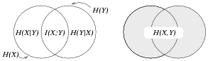
An explanation of conditional entropy and mutual information using Venn diagrams, as depicted in .
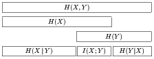
An explanation of conditional entropy and mutual information using a bar plot, as depicted in .
It is important to realize that visual explanations are not just pretty pictures but tools for understanding and intuition which can lead to a deeper grasp of the concept they convey.
Animations
In some cases, the mathematical objects under study actually are dynamical objects. In this case it is almost negligent to not show animations of this dynamics, albeit it is inevitable
for textbooks and articles presented on paper. There are a few examples pushing the limit of what can be sketched on paper, most notably the wonderful four-part cartoon series Dynamics -- The Geometry of Behavior, explaining
concepts from dynamical systems theory like periodicity, chaos and bifurcation in an exceptionally revealing and simultaneously mathematically rigoros way. This is even more impressing given the fact that the book
was written before any truly useful visualization software existed and thus solely relied on sketching by hand.
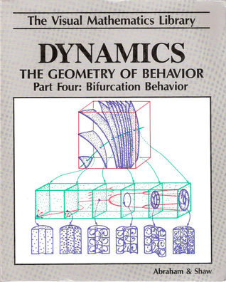
The cover of , showing bifurcation behavior of a stirring machine..
As a remarkable example of what can be achieved by switching from traditional paper to dynamical websites as a medium for presenting mathematics, we consider Michael Nielsen's online book
Neural networks and deep learning. It teaches the basics of neural networks, i.e. what neurons are, how backpropagation allows neural networks to learn,
it gives a visual proof on why neural networks are universal emulators and how "deep" neural networks work. Interspersed throughout the text (which does not shy away from proofs which might lead to a better understanding)
there are wonderful visualizations and animations.
Hurdles and challenges
- High workload
- Can't be outsourced outside of research community
- Paper is mostly too inflexible: Hard to publish and make permanent (internet technology gets outdated)!
- Technology gets outdated and looks old after some time. But: Books also get less easy to read, see for example Henry
- Hierarchical structure is not adapted universally well
Best practices
- Books: MacKay, Dynamics (Geometry of Behavior), A slower speed of light, Michael Nielsen (Neural Networks), Bret Victor